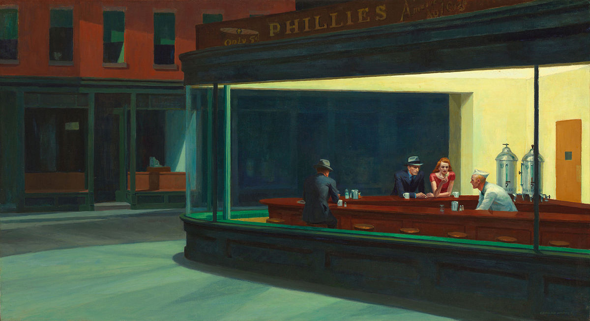
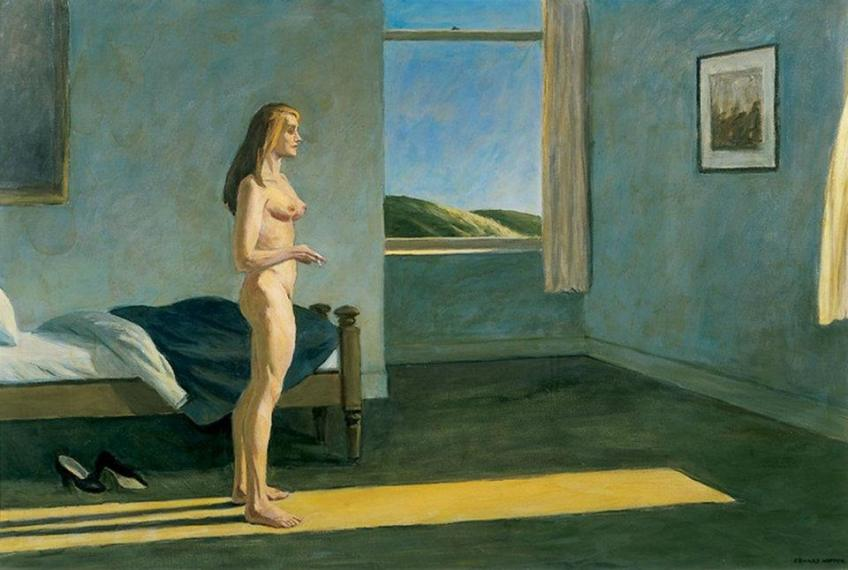

REALISMO AMERICANO
")

PAISAJES
MUJERES SOLITARIAS

")
RETRATOS
| Realismo americano | ||
|---|---|---|
| Habitacion en Nueva York | 1932 | Óleo sobre lienzo |
| Hotel junto a las vías | 1952 | Óleo sobre lienzo |
| Gasolina | 1940 | Óleo sobre lienzo |
| Aves Nocturnas | 1942 | Óleo sobre lienzo |
| Lobby de Hotel | 1943 | Óleo sobre lienzo |
| Paisajes | ||
| La Colina del Faro | 1927 | Óleo sobre lienzo |
| Etapa Larga | 1930 | Óleo sobre lienzo |
| Faro a Dos Luces | 1927 | Óleo sobre lienzo |
| Puerto de Nueva York - Hartford | 1931 | Óleo sobre lienzo |
| Mujeres Solitarias | ||
| Una mujer en la Ventana | 1961 | Óleo sobre lienzo |
| Habitacion de Hotel | 1931 | Óleo sobre lienzo |
| Mañana en el Cabo Cod | 1950 | Óleo sobre lienzo |
| Autómata | 1927 | Óleo sobre lienzo |
| Sol de la Mañana | 1952 | Óleo sobre lienzo |
| Retratos | ||
| Autoretrato | 1903 | Óleo sobre lienzo |
| Autoretrato | 1930 | Óleo sobre lienzo |
| Jo | 1936 | Óleo sobre lienzo |
| Retrato de John | 1927 | Óleo sobre lienzo |